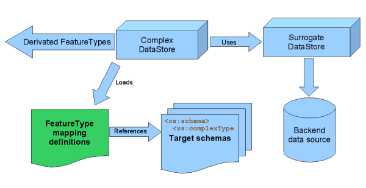

This package contains the implementation of a ComplexDataStore,
Author note: though this "Complex" datastore has born to provide complex features out of a simple features data source, it may be better called a DerivativeDataStore or something like that, you'll see why later. 
This DataStore implementation acts as a wrapper over one or more
DataStores, from now on, the surrogate DataStores, and allows to
specify a series of mappings between the properties of surrogate
FeatureTypes and output schemas. This mappings, in turn, allows to
specify properties of the target FeatureTypes as being derivated by the
evaluation of an org.geotools.filter.Expression defined
against the surrogate FeautreType.
So, what is this useful for? Suppose you have a database of feature types you need to serve out of your office or organization. Furthermore, suppose you need to serve that data in an externally defined schema (like one defined by INSPIRE or any other organization). Obviously you don't want to rearchitect your database to conform to that schema! And indeed you probably even can't do that without the assistance of some kind of object-relational mapping layer. Now you can better figure out what this ComplexDataStore is about if you think on it as a kind of object-relational mapping layer, but targeted to GIS data. Though not exact, this pseudo definition can help you understand it if its your first time reading this document.
Of course it has nothing to do with relational databases directly, but with mapping an existing GeoTools FeatureType from your internal storage schema to an externally defined one, which we're getting used to call "community schemas".
How does ComplexDataStore achieves that?
You need:
To persist this information, use a XML file which contains this definitions, and whose location in the form of an URL must be used to create a DataStore instance through the GeoTools DataStoreFinder lookup system.